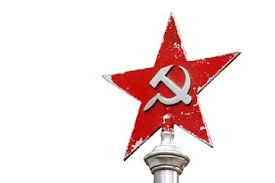

ソビエト
社会主義共和国連邦
(
しゃかいしゅぎきょうわこくれんぽう
)
建国から崩壊まで
年表
最高指導者一覧
国旗の由来
国歌の由来
top
ソ連の歩んだ歴史
建国の歴史
 ソビエト
連邦
(
れんぽう
)
は、1917年にウラジーミル・レーニン率いるボリシェヴィキが、ロシア
帝国
(
ていこく
)
を
置
(
お
)
き
換
(
か
)
える形で成立 した臨時政府を
打倒
(
うちたお
)
した十月革命を起源とする。
彼
(
かれ
)
らは、憲法で保障された世界初の社会主義国家であるロシア社会主義ソビエト共和国（RSFSR）を建国したが、 その
影響
(
えいきょう
)
でボリシェヴィキの赤軍と旧
帝国
(
ていこく
)
内の多くの反ボリシェビキ勢力との間の内戦へと発展した。 反ボリシェヴィキの最大
派閥
(
はばつ
)
は白軍であり、
彼
(
かれ
)
らはボリシェヴィキや労働者・農民の中でボリシェヴィキと
見做
(
みなし
)
された人々に対して、「白色テロ（英語版）」と呼ばれる反共産主義的な暴力的な
弾圧
(
だんあつ
)
を行った。 赤軍は勢力を拡大し、地方のボリシェヴィキが権力を
握
(
にぎ
)
るのを助け、ソビエトを設立し、政敵や
反抗的
(
はんこうてき
)
な農民を 赤色テロで
弾圧
(
だんあつ
)
した。 1922年までにボリシェヴィキは内戦で勝利し、同年12月30日にロシア、南コーカサス、ウクライナ、ベラルーシ を統合したソビエト
連邦
(
れんぽう
)
（以下ソ連）が成立した。
革命後・独裁制の完成
レーニンによって新しい政権が誕生すると次々組閣がされていき、トップとなる人民委員会議議長はレーニン自身、外務人民委員は親友・トロッキー。 少数民族人民委員会委員長にはヨシフ・スターリンが就任。 1917年11月25日に「十月革命」後最初の
普通選挙
(
ふつうせんきょ
)
議会「憲法制定議会」が
開催
(
かいさい
)
されたが、ここではレーニン率いる「ボリシェヴィキ」より「社会革命党（エスエル）」の支持率の方が高かった。 結果を知ったレーニンは議場を
封鎖
(
ふうさ
)
、解散させてしまう。 こうして「憲法制定議会」を解散させたレーニンは1918年に「ボリシェヴィキ」を「ロシア共産党」に改名して共産党以外の政党を禁止。 自身が政治を取り仕切る「独裁制」を確立した。 またこの時期は第1次世界大戦の全交戦国に「平和に関する布告」を布告。 ここでは「無
賠償
(
ばいしょう
)
」・「無
併合
(
へいごう
)
」・「民族自決」を提唱。 無視したイギリス、フランスなどの国には、イギリス・ロシア・フランス間で結ばれたオスマン
帝国領
(
ていこくりょう
)
の
分割
(
ぶんかつ
)
に関する「サイクス・ピコ協定」の内容を
暴露
(
ばくろ
)
した。
スターリンの台頭・大粛清の実施
一党
(
いっとう
)
独裁
(
どくさい
)
体制による政治を進めるレーニンだが、そのレーニンは病に
倒
(
たお
)
れることに。 1922年5月にレーニンは
脳出血
(
のうしゅっけつ
)
で
倒
(
たお
)
れ、スターリンが
党
(
とう
)
を取り仕切る書記長に
就任
(
しゅうにん
)
。 この
頃
(
ころ
)
にはスターリンとトロッキー間での
後継
(
こうけい
)
の
座
(
ざ
)
を
巡
(
めぐ
)
る対立が
激化
(
げきか
)
、スターリンはトロッキーを追い出すことに（トロッキーは1940年にメキシコで暗殺）。 国内ではその後12月30日に「ソビエト社会主義共和国
連邦
(
れんぽう
)
」の
樹立
(
じゅりつ
)
が
宣言
(
せんげん
)
され、
翌
(
よく
)
1924年1月31日に最初のソビエト
連邦
(
れんぽう
)
憲法
(
けんぽう
)
が成立することに。 病気を
患
(
わずら
)
っていたレーニンは1924年に
亡
(
な
)
くなるとスターリンの行動はさらに
過激
(
かげき
)
に。 グリゴリー・ジノヴィエフやレフ・カーメネフといったレーニンの側近たちを
党
(
とう
)
から
除名
(
じょめい
)
すると、反対勢力に対する
弾圧
(
だんあつ
)
「大
粛清
(
しゅくせい
)
」を強化させるように。 有力
党員
(
とういん
)
や軍人を次々に
処刑
(
しょけい
)
し、シベリアの強制
収容所
(
しゅうようじょ
)
に送るなどの
厳
(
きび
)
しい
処分
(
しょぶん
)
を
実施
(
じっし
)
。 これでは周辺の人間も「自分が殺される」と思って意見を言いづらくなりますね。 こうした
粛清
(
しゅくせい
)
を経て政治の重要決定はスターリンによって行われるようになり、スターリンの地位は
揺
(
ゆ
)
るがないものになっていった。
--▶
次のページへ
①
②
③
.jpg) レーニンによって新しい政権が誕生すると次々組閣がされていき、トップとなる人民委員会議議長はレーニン自身、外務人民委員は親友・トロッキー。
少数民族人民委員会委員長にはヨシフ・スターリンが就任。
1917年11月25日に「十月革命」後最初の
レーニンによって新しい政権が誕生すると次々組閣がされていき、トップとなる人民委員会議議長はレーニン自身、外務人民委員は親友・トロッキー。
少数民族人民委員会委員長にはヨシフ・スターリンが就任。
1917年11月25日に「十月革命」後最初の.jpg)